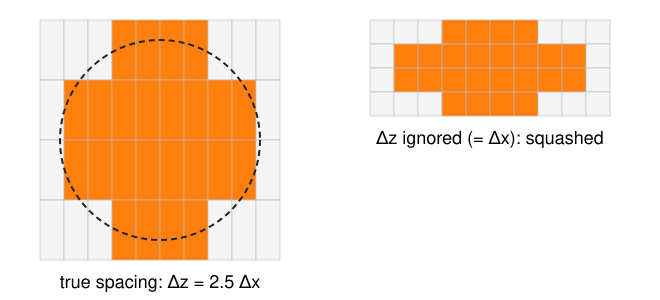
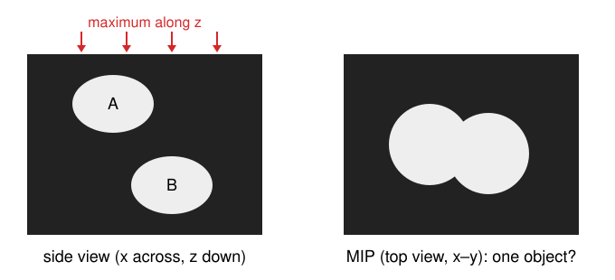

So far every image was 2D. CT and MRI scanners, confocal and light-sheet microscopes and electron microscopes all deliver 3D images: stacks of slices.
A volume is a 3D array plus its voxel spacing(\Delta x, \Delta y, \Delta z), often with \Delta z > \Delta x.
Voxel ↔︎ world: one 4 \times 4 matrix turns an index into a position in µm or mm, and back.
Trilinear interpolation, orthogonal and oblique slices, resampling: inverse mapping one dimension up.
Anisotropy in practice: filter sizes and neighbourhoods in physical units.
A first maximum-intensity projection, and what it hides.
Slides titled The math give the formulas and proofs; the ideas are complete without them.
Where 3D images come from
Instrument
Typical voxel size
Shape of the voxel
CT (X-ray tomography)
0.5 mm
about a cube
MRI
1 mm, slices often 3–5 mm
flat in plane, long across slices
Confocal microscope
0.1 µm in x, y, 0.3–0.5 µm in z
elongated along z
Light-sheet microscope
0.3–0.5 µm in x, y, 1–2 µm in z
elongated along z
Electron microscopy (serial sections)
5 nm in x, y, 30–50 nm in z
elongated along z
Microscopes take one 2D image per focus position: the stack. The step between images is \Delta z.
Why \Delta z is usually larger: the blur of a microscope is several times longer along the optical axis than across it (the elongated PSF of the image formation day), so finer steps in z would add little detail.
A volume is an array plus its spacing

Values I[z, y, x]: slice z, row y, column x (as in images/: x right, y down, z along the stack).
Voxel spacing(\Delta x, \Delta y, \Delta z) in µm or mm: the distance between neighbouring voxel centres.
The array alone does not know its spacing. Drawn with \Delta z = \Delta x, a round nucleus becomes a flat pancake; its volume and surface come out wrong.
Always carry the spacing with the array, and do every measurement in physical units.
From a voxel index to a position
Voxel (i, j, k) = column i, row j, slice k. Its centre in the world (in µm):
step i times along the voxel’s x axis (length \Delta x), j times along y, k times along z,
starting from the position of voxel (0, 0, 0), the origin (e.g. the stage position).
Example: spacing (0.5, 0.5, 2) µm, origin (10, 20, 5) µm. Voxel (2, 3, 1) is at
Backwards, the world point (12.125, 21.75, 8.5) µm lies at voxel (4.25, 3.5, 1.75): between voxels, so we will need to interpolate.
The math: the voxel → world matrix
In homogeneous coordinates one 4 \times 4 matrix does it:
\begin{bmatrix} \mathbf x \\ 1 \end{bmatrix} = A \begin{bmatrix} i \\ j \\ k \\ 1 \end{bmatrix}, \qquad A = \begin{bmatrix} R\,\mathrm{diag}(\Delta x, \Delta y, \Delta z) & \mathbf o \\ \mathbf 0^\top & 1 \end{bmatrix}.
The columns of A are the three voxel axes (scaled by the spacing) and the origin \mathbf o. R is a rotation, when the axes of the scanner are tilted against the world (a tilted head in MRI); in a microscope R = I.
Spacing alone: A = \begin{bmatrix} \Delta x & 0 & 0 & o_x \\ 0 & \Delta y & 0 & o_y \\ 0 & 0 & \Delta z & o_z \\ 0 & 0 & 0 & 1\end{bmatrix}.
World → voxel: A^{-1} = \begin{bmatrix} \mathrm{diag}(1/\Delta)\,R^\top & -\mathrm{diag}(1/\Delta)\,R^\top\mathbf o \\ \mathbf 0^\top & 1 \end{bmatrix}.
Medical file formats store this matrix (or its parts) in their header. Warning: their axis conventions differ (which way x and y point, whether k counts up or down), so check with a known landmark.
Trilinear interpolation
To read the volume between voxels, interpolate in x, then in y, then in z: trilinear interpolation, the 3D version of bilinear interpolation from images/.
The point lies in a cube of 8 voxels. Its fractional position (f_x, f_y, f_z) in that cube sets the weights.
Example at (4.25, 3.5, 1.75): along x (f_x = 0.25) the four pairs 10, 20 \;\to\; 12.5; 30, 60 \to 37.5; 50, 50 \to 50; 90, 70 \to 85. Along y (f_y = 0.5): 25 and 67.5. Along z (f_z = 0.75): 25 + 0.75 \cdot 42.5 = 56.875.
The order (x first or z first) does not matter.
The math: trilinear weights
With f_x, f_y, f_z \in [0, 1] the position inside the cube and I_{abc} the corner values (a, b, c \in \{0, 1\}):
The 8 weights are \ge 0 and sum to 1: a weighted average of the corners.
It is linear along every line parallel to an axis, but not along other lines: on the diagonal f_x = f_y = f_z = t it is a cubic in t. (This is why level sets of the interpolant are curved, which matters in the next units.)
It reproduces exactly every function a + bx + cy + dz + exy + fyz + gxz + hxyz.
Slices: orthogonal and oblique
Orthogonal slices (xy, xz, yz) are array indexing: fix one index. Draw them with their physical aspect ratio (xz is n_x\Delta x wide and n_z\Delta z high).
An oblique slice is a plane at any angle: a centre \mathbf c and two orthogonal unit directions \mathbf u, \mathbf w in the world. For each output pixel (p, q):
world point \mathbf x = \mathbf c + p\,s\,\mathbf u + q\,s\,\mathbf w (pixel size s),
voxel position A^{-1}\mathbf x,
trilinear interpolation there.
This is inverse mapping from images/, one dimension up: loop over the output, ask where it comes from.
Resampling to isotropic voxels is the same loop over a new grid with spacing (\Delta x, \Delta x, \Delta x). It does not add detail along z; it only makes later steps simpler.
Try it: slices of a stack
Anisotropy in practice
Work in physical units, convert to voxels per axis:
A Gaussian blur of \sigma = 0.4 µm in every direction is \sigma = 2 voxels in x and y but 0.8 voxels in z (spacing 0.2, 0.2, 0.5 µm). An “isotropic” \sigma = 2 voxels would blur 1 µm along z.
Derivatives (gradients, Sobel from kernels/): divide each difference by its own spacing.
Neighbourhoods: in 3D a voxel has 6 face neighbours, 18 with the edges, 26 with the corners (the 3D connectivities of the labelling day). With \Delta z \gg \Delta x the “neighbour” above is much further away than the one beside.
Distances: the distance transform and every size measure need the spacing.
The math: per-axis scale
A physical length \ell along axis a covers \ell / \Delta a voxels, so
The 3D Gaussian is separable: blur along x, then y, then z, each with its own \sigma^{\text{vox}}; 3 passes of length \sim 6\sigma instead of one (6\sigma)^3 kernel.
With the gradient divided by voxels instead of µm, the z component is \Delta z / \Delta x times too large: the direction of \nabla I (and every normal computed from it) tilts.
A first look: the maximum-intensity projection

MIP: for every (x, y), the largest value along z. One 2D image that shows every bright object, which is why microscopy figures use it.
What it hides:
Overlaps: nuclei at different depths merge into one blob.
Sizes: areas in the MIP are areas of the shadow, not of a section.
Depth: nothing tells you which object is in front.
Rule: look at MIPs, measure in 3D.
Slice by slice, or in 3D?
2D, slice by slice: segment each xy image on its own, then link the pieces across slices. Simple, but every slice decides alone: an object can break between slices, and two objects touching in one slice get merged.
3D: filters, thresholds, connected components, watershed and the rest work on the whole volume with 3D neighbourhoods; sizes and shapes are measured in 3D with the spacing.
With very coarse z (MRI slices of 5 mm), 2D per slice plus linking can be the honest choice: there is little 3D information to use.
Showing results: slices, projections, or a surface around each object. Surfaces are the rest of this day.
Summary
A 3D image = an array I[z, y, x]plus voxel spacing (\Delta x, \Delta y, \Delta z) and an origin; in microscopy usually \Delta z > \Delta x.
One 4\times4 matrix maps voxel indices to world positions; its inverse maps back.
Trilinear interpolation: a weighted average of 8 voxels. Oblique slices and resampling are inverse mapping + trilinear.
Blur, derivatives, neighbourhoods and measurements: in physical units, per axis.
The MIP is for looking, not for measuring: it merges objects at different depths.